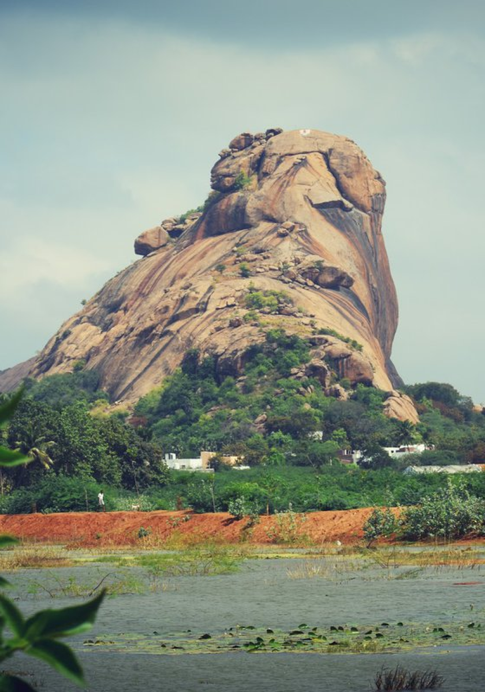

A Rock with a Soul
- Yaanaimalai isn’t just a geological wonder; it’s a spiritual and historical landmark. This hill is home to ancient Jain sculptures and inscriptions, dating back to 2nd century BCE to 9th century CE. Carved into the rock face are serene Jain Tirthankaras, depicted in meditative postures, surrounded by delicate etchings of Tamil-Brahmi and Vatteluttu inscriptions.
- Each sculpture here is more than just stone — it is a silent storyteller of an era when Jainism flourished in the Tamil region. The hill stands as a testimony to a peaceful, knowledge-driven faith that shaped the region’s cultural and moral fabric long before temples and kings took the stage.
For back sleepers, medium-firm mattresses with lumbar support are ideal. A mattress like Nimmathi Anandha or Nimmathi Inimai Pocketed can offer the right support for your spine and enhance comfort during sleep.


The Sacred Connection
- Apart from Jain heritage, Yaanaimalai is also home to the Lordanayagi Amman Temple and the Yoga Narasimha Perumal Temple, which sit close to the base of the hill. These temples are still actively worshipped, linking the hill’s ancient past with its spiritual present.
- It is this coexistence of Jain, Vaishnavite, and local folk traditions that makes Yaanaimalai so unique — a living museum where time doesn’t separate, but unites.
A Haven for Heritage Lovers
- Whether you’re a history enthusiast, a photographer, a trekker, or a spiritual seeker, Yaanaimalai offers something that touches the soul. The rock-cut sculptures, the serene surroundings, and the panoramic views from the top of the hill make it a perfect spot for quiet reflection and exploration.
- The surrounding landscape is dotted with shrubs, flowering trees, and occasionally, peacocks and monkeys, giving the place a wild, untouched charm. As you walk along the paths, the sound of the wind brushing across the stone feels almost like ancient whispers — echoes of monks who once meditated here.
Getting There
- Yaanaimalai is located about 10 km northeast of Madurai city, near Othakadai. It’s easily reachable by car, auto, or local buses. Early morning or late evening is the best time to visit, especially for photography and comfortable trekking.